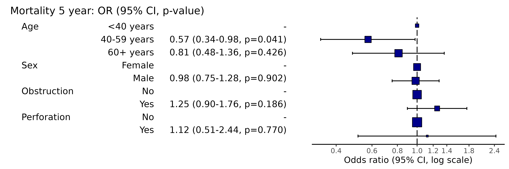
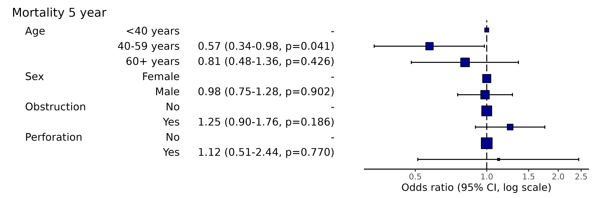
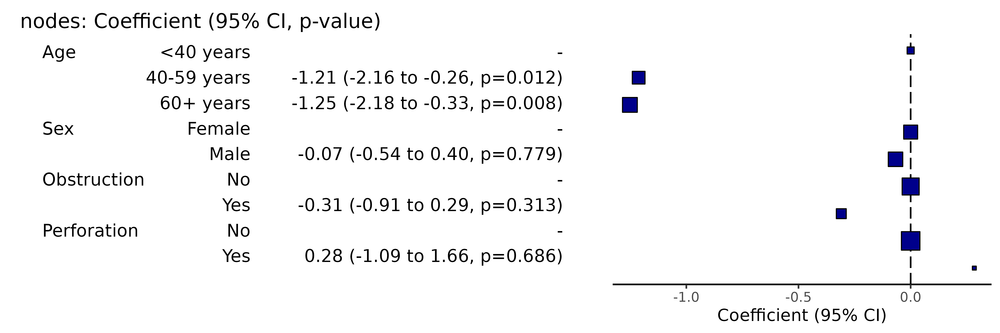
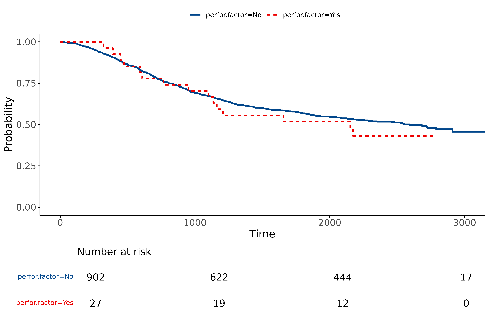

1 Odds ratio plots
1.01 Standard odds ratio plot (forest plot)
This is used to visually present the results from a multivariable generalised linear model (usually logistic regression).
Here is the model:
library(finalfit)
explanatory = c("age.factor", "sex.factor", "obstruct.factor", "perfor.factor")
dependent = 'mort_5yr'
colon_s %>%
finalfit(dependent, explanatory) %>%
knitr::kable(row.names=FALSE) # This line only needed for formatting. | Dependent: Mortality 5 year | Alive | Died | OR (univariable) | OR (multivariable) | |
|---|---|---|---|---|---|
| Age | <40 years | 31 (46.3) | 36 (53.7) | - | - |
| 40-59 years | 208 (61.4) | 131 (38.6) | 0.54 (0.32-0.92, p=0.023) | 0.57 (0.34-0.98, p=0.041) | |
| 60+ years | 272 (53.4) | 237 (46.6) | 0.75 (0.45-1.25, p=0.270) | 0.81 (0.48-1.36, p=0.426) | |
| Sex | Female | 243 (55.6) | 194 (44.4) | - | - |
| Male | 268 (56.1) | 210 (43.9) | 0.98 (0.76-1.27, p=0.889) | 0.98 (0.75-1.28, p=0.902) | |
| Obstruction | No | 408 (56.7) | 312 (43.3) | - | - |
| Yes | 89 (51.1) | 85 (48.9) | 1.25 (0.90-1.74, p=0.189) | 1.25 (0.90-1.76, p=0.186) | |
| Perforation | No | 497 (56.0) | 391 (44.0) | - | - |
| Yes | 14 (51.9) | 13 (48.1) | 1.18 (0.54-2.55, p=0.672) | 1.12 (0.51-2.44, p=0.770) |
Simply switch to or_plot() for plot.
library(finalfit)
explanatory = c("age.factor", "sex.factor", "obstruct.factor", "perfor.factor")
dependent = 'mort_5yr'
colon_s %>%
or_plot(dependent, explanatory)
# Note this example uses fig.height=3, fig.width=9Adjust figure width and height to optimise formatting.
1.02 Mixed effects odds ratio plot (forest plot)
This is used to visually present the results from a mixed effects / multilevel / hierarchical generalised linear model (usually logistic regression).
Here is the model:
library(finalfit)
explanatory = c("age.factor", "sex.factor", "obstruct.factor", "perfor.factor")
dependent = 'mort_5yr'
random_effect = "hospital"
colon_s %>%
finalfit(dependent, explanatory, random_effect = random_effect)%>%
knitr::kable(row.names=FALSE) # This line only needed for formatting.| Dependent: Mortality 5 year | Alive | Died | OR (univariable) | OR (multilevel) | |
|---|---|---|---|---|---|
| Age | <40 years | 31 (46.3) | 36 (53.7) | - | - |
| 40-59 years | 208 (61.4) | 131 (38.6) | 0.54 (0.32-0.92, p=0.023) | 0.75 (0.39-1.44, p=0.382) | |
| 60+ years | 272 (53.4) | 237 (46.6) | 0.75 (0.45-1.25, p=0.270) | 1.03 (0.55-1.96, p=0.916) | |
| Sex | Female | 243 (55.6) | 194 (44.4) | - | - |
| Male | 268 (56.1) | 210 (43.9) | 0.98 (0.76-1.27, p=0.889) | 0.80 (0.58-1.11, p=0.180) | |
| Obstruction | No | 408 (56.7) | 312 (43.3) | - | - |
| Yes | 89 (51.1) | 85 (48.9) | 1.25 (0.90-1.74, p=0.189) | 1.23 (0.82-1.83, p=0.320) | |
| Perforation | No | 497 (56.0) | 391 (44.0) | - | - |
| Yes | 14 (51.9) | 13 (48.1) | 1.18 (0.54-2.55, p=0.672) | 1.03 (0.43-2.51, p=0.940) |
library(finalfit)
explanatory = c("age.factor", "sex.factor", "obstruct.factor", "perfor.factor")
dependent = 'mort_5yr'
random_effect = "hospital"
colon_s %>%
or_plot(dependent, explanatory, random_effect = random_effect)
# Note this example uses fig.height=3, fig.width=91.03 Plotting a subset of variables from a full model
You may wish to only present a subset of variables from a full model, say an explanatory variable of interest without covariates to avoid table 2 fallacy.
library(finalfit)
explanatory = c("age.factor", "sex.factor", "obstruct.factor", "perfor.factor")
dependent = 'mort_5yr'
# Run summary_factorlist for variables you wish to include
## Include total_col = TRUE and fit_id = TRUE
factorlist = colon_s %>%
summary_factorlist(dependent, "age.factor", total_col = TRUE, fit_id = TRUE)
# Run full model including factorlist
colon_s %>%
or_plot(dependent, explanatory, factorlist = factorlist)
# Note this example uses fig.height=2, fig.width=91.04 Plotting from model object
When a model takes a long time to run, you do not want to re-run it to plot it. Pass the model object to the plotting function.
library(finalfit)
explanatory = c("age.factor", "sex.factor", "obstruct.factor", "perfor.factor")
dependent = 'mort_5yr'
random_effect = "hospital"
fit = colon_s %>%
glmmixed(dependent, explanatory, random_effect)
# Equivalent to:
fit = colon_s %>%
lme4::glmer(mort_5yr ~ age.factor + sex.factor + obstruct.factor + perfor.factor + (1 | hospital),
family="binomial", data = .)
# Which is incidentally equivalent to:
fit = colon_s %>%
lme4::glmer(ff_formula(dependent, explanatory, random_effect),
family="binomial", data = .)
# Plot
system.time(colon_s %>%
or_plot(dependent, explanatory, random_effect = random_effect, glmfit = fit)
)#> user system elapsed
#> 0.637 0.004 0.649
# Note this example uses fig.height=3, fig.width=91.05 Confidence interval type
Change the type of confidence interval. For GLM, this is “profile” by default, but confusingly “default” is also available (Wald) which is quicker but may be biased when the likelihood function is not symmetrical around the maximum likelihood estimate. Translated - best to use “profile” or an alternative approach (like bootstrapping) for final results.
library(finalfit)
explanatory = c("age.factor", "sex.factor", "obstruct.factor", "perfor.factor")
dependent = 'mort_5yr'
colon_s %>%
or_plot(dependent, explanatory, confint_type = "default")
# Note this example uses fig.height=3, fig.width=91.06 Remove reference levels
This will remove reference levels for binary variables.
library(finalfit)
explanatory = c("age.factor", "sex.factor", "obstruct.factor", "perfor.factor")
dependent = 'mort_5yr'
colon_s %>%
or_plot(dependent, explanatory, remove_ref = TRUE)
# Note this example uses fig.height=3, fig.width=91.07 Manually specifiy x-axis breaks
Note, this will not include labels that are outwith the axis range,
i.e., if the axis starts at 0.2, adding 0.1 will not result in any
change. Use plot_opts to alter axis range.
library(finalfit)
explanatory = c("age.factor", "sex.factor", "obstruct.factor", "perfor.factor")
dependent = 'mort_5yr'
colon_s %>%
or_plot(dependent, explanatory, breaks = c(0.4, 0.6, 0.8, 1.0, 1.2, 1.4, 1.8, 2.4))
# Note this example uses fig.height=3, fig.width=91.08 Adjust table column spacing
Nudge relative column positions to manage white space. Use in combination with figure width to optimise.
library(finalfit)
explanatory = c("age.factor", "sex.factor", "obstruct.factor", "perfor.factor")
dependent = 'mort_5yr'
colon_s %>%
or_plot(dependent, explanatory, column_space = c(-0.5, -0.1, 0.5))
# Note this example uses fig.height=3, fig.width=91.09 Adjust or remove dependent variable label
library(finalfit)
explanatory = c("age.factor", "sex.factor", "obstruct.factor", "perfor.factor")
dependent = 'mort_5yr'
colon_s %>%
or_plot(dependent, explanatory, dependent_label = "Mortality")
# Note this example uses fig.height=3, fig.width=91.10 Add dependent variable label prefix
library(finalfit)
explanatory = c("age.factor", "sex.factor", "obstruct.factor", "perfor.factor")
dependent = 'mort_5yr'
colon_s %>%
or_plot(dependent, explanatory, prefix = "Figure 1 - ")
# Note this example uses fig.height=3, fig.width=91.11 Adjust or remove dependent variable label suffix
library(finalfit)
explanatory = c("age.factor", "sex.factor", "obstruct.factor", "perfor.factor")
dependent = 'mort_5yr'
colon_s %>%
or_plot(dependent, explanatory, suffix = "")
# Note this example uses fig.height=3, fig.width=91.12 Adjust table text size
library(finalfit)
explanatory = c("age.factor", "sex.factor", "obstruct.factor", "perfor.factor")
dependent = 'mort_5yr'
colon_s %>%
or_plot(dependent, explanatory, table_text_size = 3)
# Note this example uses fig.height=4, fig.width=91.13 Adjust title text size
library(finalfit)
explanatory = c("age.factor", "sex.factor", "obstruct.factor", "perfor.factor")
dependent = 'mort_5yr'
colon_s %>%
or_plot(dependent, explanatory, title_text_size = 12)
# Note this example uses fig.height=3, fig.width=91.14 Add plot options
This adds further ggplot arguments appended in the usual
way by “+”.
library(finalfit)
library(ggplot2)
explanatory = c("age.factor", "sex.factor", "obstruct.factor", "perfor.factor")
dependent = 'mort_5yr'
colon_s %>%
or_plot(dependent, explanatory,
plot_opts = list(xlim(0.1, 3),
xlab("OR (95% CI, log)"),
theme(axis.title = element_text(size=10))
)
)
# Note this example uses fig.height=3, fig.width=91.15 Add other options
Pass any options for fit2df() to adjust table, e.g.,
number of decimal places, confidence interval separator etc.
library(finalfit)
explanatory = c("age.factor", "sex.factor", "obstruct.factor", "perfor.factor")
dependent = 'mort_5yr'
colon_s %>%
or_plot(dependent, explanatory,
digits = c(3,3,3), confint_sep = " to ", column_space = c(-0.5, -0.1, 0.5))
# Note this example uses fig.height=3, fig.width=102 Hazard ratio plots
2.01 Standard hazard ratio plot
This is used to visually present the results from a multivariable Cox Proportional Hazards model.
Here is the model:
library(finalfit)
explanatory = c("age.factor", "sex.factor", "obstruct.factor", "perfor.factor")
dependent = "Surv(time, status)"
colon_s %>%
finalfit(dependent, explanatory) %>%
knitr::kable(row.names=FALSE) # This line only needed for formatting. | Dependent: Surv(time, status) | all | HR (univariable) | HR (multivariable) | |
|---|---|---|---|---|
| Age | <40 years | 70 (7.5) | - | - |
| 40-59 years | 344 (37.0) | 0.76 (0.53-1.09, p=0.132) | 0.79 (0.55-1.13, p=0.196) | |
| 60+ years | 515 (55.4) | 0.93 (0.66-1.31, p=0.668) | 0.98 (0.69-1.40, p=0.926) | |
| Sex | Female | 445 (47.9) | - | - |
| Male | 484 (52.1) | 1.01 (0.84-1.22, p=0.888) | 1.02 (0.85-1.23, p=0.812) | |
| Obstruction | No | 732 (80.6) | - | - |
| Yes | 176 (19.4) | 1.29 (1.03-1.62, p=0.028) | 1.30 (1.03-1.64, p=0.026) | |
| Perforation | No | 902 (97.1) | - | - |
| Yes | 27 (2.9) | 1.17 (0.70-1.95, p=0.556) | 1.08 (0.64-1.81, p=0.785) |
Simply switch to hr_plot() for plot.
library(finalfit)
explanatory = c("age.factor", "sex.factor", "obstruct.factor", "perfor.factor")
dependent = "Surv(time, status)"
colon_s %>%
hr_plot(dependent, explanatory)
# Note this example uses fig.height=3, fig.width=9- All options list for odds ratio plots above (section 1) apply to hazard ratio plots.
3 Coefficient plots
3.01 Standard coefficient plots
This is used to visually present the results from a multivariable linear regression model.
#’ # Coefficient plot #’ explanatory = c(“age.factor”, “sex.factor”, “obstruct.factor”, “perfor.factor”) #’ dependent = “nodes” #’ colon_s %>% #’ coefficient_plot(dependent, explanatory)
Here is the model:
library(finalfit)
explanatory = c("age.factor", "sex.factor", "obstruct.factor", "perfor.factor")
dependent = "nodes"
colon_s %>%
finalfit(dependent, explanatory) %>%
knitr::kable(row.names=FALSE) # This line only needed for formatting. | Dependent: nodes | unit | value | Coefficient (univariable) | Coefficient (multivariable) | |
|---|---|---|---|---|---|
| Age | <40 years | Mean (sd) | 4.7 (4.5) | - | - |
| 40-59 years | Mean (sd) | 3.6 (3.3) | -1.14 (-2.08 to -0.21, p=0.016) | -1.21 (-2.16 to -0.26, p=0.012) | |
| 60+ years | Mean (sd) | 3.6 (3.6) | -1.19 (-2.10 to -0.28, p=0.010) | -1.25 (-2.18 to -0.33, p=0.008) | |
| Sex | Female | Mean (sd) | 3.7 (3.6) | - | - |
| Male | Mean (sd) | 3.6 (3.6) | -0.14 (-0.60 to 0.33, p=0.565) | -0.07 (-0.54 to 0.40, p=0.779) | |
| Obstruction | No | Mean (sd) | 3.7 (3.7) | - | - |
| Yes | Mean (sd) | 3.5 (3.2) | -0.24 (-0.83 to 0.36, p=0.435) | -0.31 (-0.91 to 0.29, p=0.313) | |
| Perforation | No | Mean (sd) | 3.7 (3.6) | - | - |
| Yes | Mean (sd) | 3.9 (2.8) | 0.24 (-1.13 to 1.61, p=0.735) | 0.28 (-1.09 to 1.66, p=0.686) |
Simply switch to coeffcient_plot() for plot.
library(finalfit)
explanatory = c("age.factor", "sex.factor", "obstruct.factor", "perfor.factor")
dependent = "nodes"
colon_s %>%
coefficient_plot(dependent, explanatory)
# Note this example uses fig.height=3, fig.width=9- All options list for odds ratio plots above (section 1) apply to coefficient ratio plots.
4 Wrapper for all plot types
ff_plot() will automatically determine the dependent
variable type (binary, survival object, or continuous), and produce the
appropriate output (odds ratio, hazard ratio, or coefficient plot).
library(finalfit)
explanatory = c("age.factor", "sex.factor", "obstruct.factor", "perfor.factor")
dependent = "nodes"
colon_s %>%
ff_plot(dependent, explanatory)
# Note this example uses fig.height=3, fig.width=95 Kaplan Meier plots
Use finalfit grammar to plot a survival curve with number-at-risk
table using survminer::ggsurvplot().
5.1 Standard KM plot
library(finalfit)
explanatory = "perfor.factor"
dependent = "Surv(time, status)"
colon_s %>%
surv_plot(dependent, explanatory)
5.2 Adjust using options
Pass any of the options from
survminer::ggsurvplot().
For example:
library(finalfit)
explanatory = "perfor.factor"
dependent = "Surv(time, status)"
colon_s %>%
surv_plot(dependent, explanatory, xlab="Time (days)", pval=TRUE, legend="none")